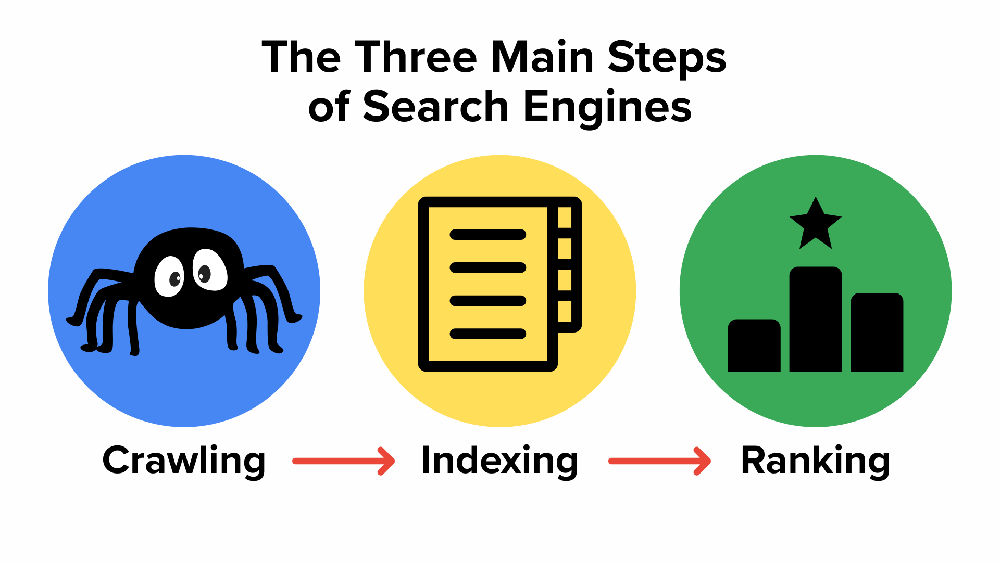

The Three Main Steps of Search Engines
Search engines use several major processes to organize the internet and return useful results to users. These processes include crawling, indexing, and ranking.

Crawling
Search engines use automated programs called web crawlers or bots to explore
the internet. These bots visit websites, follow links, and discover new pages across the web.
Learn more about crawling
Indexing
After pages are discovered, search engines analyze the content and store important information in a massive
database called an index. This allows search engines to quickly find pages when someone performs a search.
Learn more about indexing
Ranking
When a user enters a search query, the search engine sorts through the index and ranks pages based on relevance, quality,
and many other factors to determine which results appear first.
Learn more about ranking